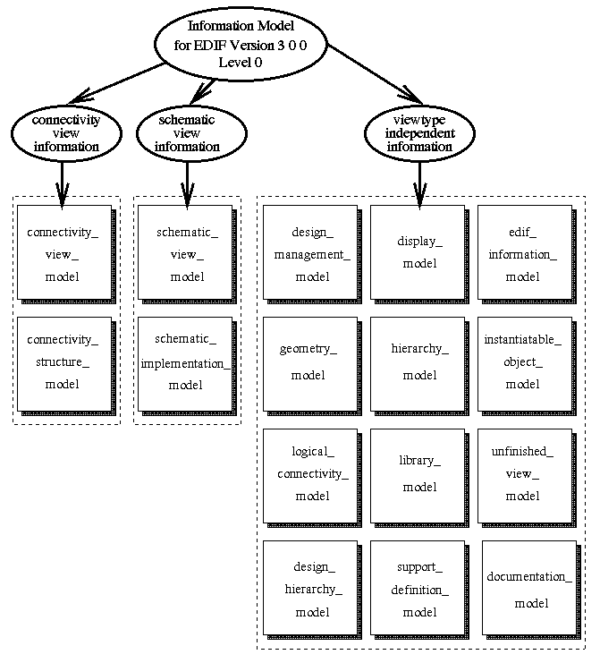

This document describes the information model of EDIF Version 3 0 0, a new version beyond EDIF Version 2 0 0[1, 2]. The goals of EDIF Version 3 0 0 include :
EDIF Version 3 0 0 descriptions can be specified at two different levels of complexity: Level 0 and Level 1. The Level 0 description is useful for sending static descriptions of electronic design data and the bulk of normal design transfer is expected to be done in Level 0. The Level 1 description supports parameterization of cells and frames.
The model presented in this document covers the concepts of Level 0 descriptions of EDIF Version 3 0 0. A brief introduction to the information modelling language EXPRESS and its graphical notation EXPRESS-G is provided in appendix A. Appendix B identifies whether or not an EDIF Version 3 0 0 construct has been modelled in the Information Model. Appendix C describes the mapping mechanism between the Information Model and the syntax. Appendix D gives the permuted index of entities defined in the model. Appendix E states the point of definition of an EXPRESS object (including all schemas, entities, types and functions) in this document.
The aim of the information modelling activity has been to create a formal description of the design information carried by the new version of EDIF. This model represents formally the semantics of EDIF Version 3 0 0. It is intended to be used to improve the understanding of EDIF Version 3 0 0 and to ensure that the fundamental objects in EDIF Version 3 0 0 map as accurately as possible to the objects commonly found in CAE systems (e.g. nets, busses, ports and signals). In addition, the modelling process itself is valuable in helping to identify ambiguities in proposals for EDIF Version 3 0 0. This information model of EDIF Version 3 0 0 is the basis from which the EDIF Version 3 0 0 syntax has been derived.
The language which has been chosen for the modelling of EDIF Version 3 0 0 is EXPRESS[3] - an information modelling language. It is neither a programming language nor a database design language. It is designed to be the formal language used to describe a new proposed International Standard (ISO 10303) for the exchange of product definition data between computer application systems. EXPRESS and its graphical notation EXPRESS-G are outlined in appendix A.
The first phase of the modelling activity was to identify the set of information which is relevant to its scope. At present, ten categories of design information have been identified.
In EDIF Version 3 0 0, different representation techniques are available to describe various aspects of a cell. Each representation (i.e. view or symbol) conveys a different set of design information as identified above. At present, EDIF Version 3 0 0 supports the following types of view: connectivity (analogous to the EDIF Version 2 0 0 netlist viewtype), schematic, symboliclayout, masklayout, pcblayout, logicmodel and behavior. In addition, EDIF Version 3 0 0 allows a symbol to be a form of cell representation in its own right. There may be a symbol for each type of view for which a coordinate space exists, i.e. schematic, masklayout, pcblayout and symboliclayout.
Each category of design information is modelled as an EXPRESS SCHEMA. A schema provides a context for the definition of things of similar interest. Each schema has been made independent of other schemas whenever possible so that the schema definition is more robust. Each EDIF Version 3 0 0 viewtype is also modelled separately in a different schema.
At present, the information model for EDIF Version 3 0 0 Level 0 consists of a total of 16 schemas. Figure 1.1 shows the structuring of schemas in the information model.

Figure 1.1: The structuring of schemas in the information model for EDIF Version
3 0 0 (Level 0)
Some schemas contain general information which is useful in the definition of other schemas. The edif_information_model schema provides the information held by an EDIF file. The library_model schema contains the technology information of a library. The hierarchy_model schema describes the hierarchical information of a cell. The design_hierarchy_model schema holds the annotation data relating to a design hierarchy. The instantiatable_object_model schema defines various types of reusable template. The logical_connectivity_model schema specifies the view-wide connectivity. The design_management_model schema provides the design management information. The documentation_model schema describes the documentation provided for an object. The geometry_model schema describes the geometrical concepts. It is used by the display_model which associates geometry with display attributes to describe graphical primitives. Finally, the support_definition_model schema provides general entity, type and function definitions which are used by other schemas.
On the other hand, some schemas are viewtype specific. At present, the information model has completely described the connectivity and schematic viewtypes. The information for the connectivity viewtype is specified in the connectivity_view_model and the connectivity_structure_model schemas. The connectivity_structure_model schema describes the structural connectivity of the connectivity view. The information for the schematic viewtype is specified in the schematic_view_model and the schematic_implementation_model schemas. The schematic_implementation_model describes the structural implementation of a schematic view. Other viewtypes, such as pcblayout, masklayout, symboliclayout, logicmodel and behavior are given as ``stubs'' in the unfinished_view_model schema.
The techniques used for modelling the concepts of containment, object referencing and instantiation are described in this section.
In EDIF, containment is a purely lexical mechanism and relates to the textual enclosure of object descriptions within the matching parentheses of another description.
Many relationships are expressed using simple containment. A design definition being part of an edif file and a cell being within a particular library are examples of this type of relationship.
To model the containment technique in EXPRESS, a specific technique has been used. This is illustrated in the example given in figure 1.2.
entity edif;
designs : set of design;
...
end_entity;
entity design;
...
WHERE
containment_constraint :
(* A design belongs to one edif file. *)
belongs_to_one(SELF, 'edif.designs');
end_entity;
function belongs_to_one
(entity_instance : generic; role : string) : boolean;
return(sizeof(usedin(entity_instance, role)) = 1);
end_function;
|
The belongs_to_one function is defined in terms of the EXPRESS USEDIN function. This function accepts an entity instance and the role it plays in the definition of other entities. It returns true if there is only one entity instance which uses that entity_instance in the specified role. In this example, the constraint in the definition of entity design requires every design instance to be used by only one edif instance. Therefore, the effect of containment is achieved.
Many relationships are expressed using simple containment. However, this method alone is only adequate to describe simple structures. There are many relationships between objects in a typical CAD database which require more flexibility to be expressed, such as the instantiation of one cell within another, or connectivity.
In EDIF, names (or identifiers) are used to identify objects uniquely. They are valid with a well-defined scope. For example, the identifier chosen for a port in one cell cannot be confused with that of a port of another cell that happens to have the same spelling. However, such local identifiers require some form of qualification before the local object can be referenced from another context. For example, to reference a cell may require both the cell identifier and the library identifier to be specified.
Consider the following excerpt from an EDIF description; a design I1 contains a reference to cell V1 in a library, called lib. This kind of nested reference is required whenever an EDIF object is accessed outside its own context.
(design I1 (cellRef V1 (libraryRef lib)) (designHeader ...))
A possible model for this referencing mechanism is given in figure 1.3.
entity library;
name : library_identifier;
cells : set of cell;
...
end_entity;
entity cell;
name : cell_identifier;
clusters : set of cluster;
...
end_entity;
entity design;
top_cell : cell_identifier;
referenced_library : library_identifier;
...
where
-- checks that the top_cell belongs to the referenced_library
end_entity;
|
However, in EXPRESS, nested reference is not necessary because every object has a unique identity. The use of an identifier becomes obsolete. An occurrence of a cell can be referenced directly without giving information about the containing library. Hence, there is no need for EXPRESS to copy the nested referencing mechanism which EDIF uses for coping with syntactic constraints. The correct model is given in figure 1.4.
entity library; cells : set of cell; (* no need for library_identifier *) ... end_entity; entity cell; clusters : set of cluster; (* no need for cell_identifier *) ... end_entity; entity design; top_cell : cell; -- direct reference to the cell definition ... end_entity; |
The general mechanism for modelling instantiation is given in figure 1.5. In the example, entity XYZ_object contains attributes a, b, c and d. Attributes a and b are preserved on instantiation of XYZ_object, whereas attributes c and d are not. Entity XYZ_instance is an instance of XYZ_object and contains a reference to its master and some instance specific attributes (i.e. e and f).
entity XYZ_object; a, b : instantiatable_attr; c, d : noninstantiatable_attr; end_entity; entity XYZ_instance; instantiated_object : XYZ_object; -- reference to the object definition e, f : instance_specific_attr; end_entity; |